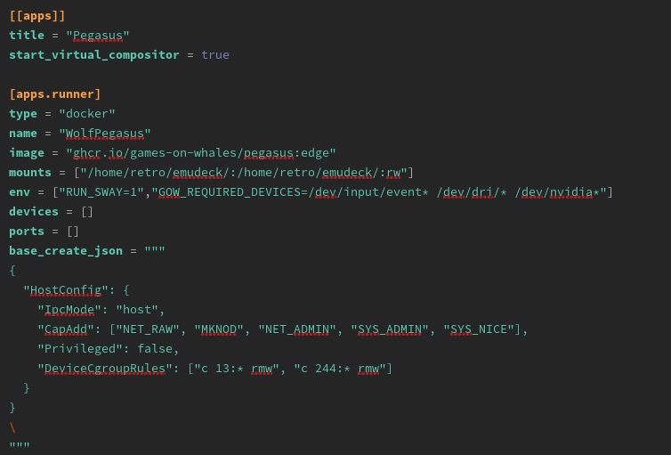
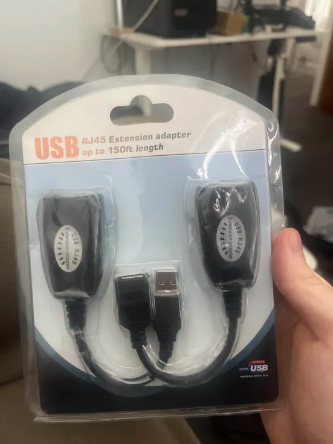
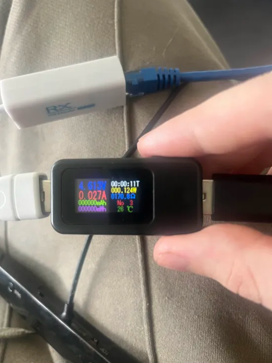
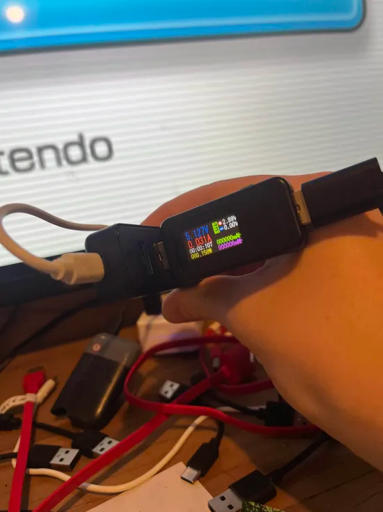

I recently set up a linux home server and the first project that i wanted to do was the ability to stream games from my server to other devices in my house (eg the Apple TV in the lounge, my Iphone, ect).
Because i wanted to stream the games in a headless environment i decided that i'd use the containerized GoW (Games on Whales) application that uses a service called Wolf to stream my games to Moonlight applications on the network. Github link: https://github.com/games-on-whales
first i created a directory for my GoW content to download into using
$ mkdir gamesonwhales
Because im running an Nvidia gtx 2060 in my system, i had to do a few extra steps to set up the container as mentioned in the quickstart guide they provide https://games-on-whales.github.io/wolf/stable/user/quickstart.html.
once my nvidia drivers were updated i would have to make some SELinux changes to let the docker build container work properly as im on the Fedora 40 workstation.
$ setenforce 0
is a command that turns off SELinux enforcement off and allows the container to run, it is a temporary fix and to do it properly i need to go through and fix the list of SELinux errors it spits out at me to give the container the proper permissions to run.
next i ran the build command:
$ sudo docker run --name wolf --network=host -e XDG_RUNTIME_DIR=/tmp/sockets -v /tmp/sockets:/tmp/sockets:rw -e NVIDIA_DRIVER_VOLUME_NAME=nvidia-driver-vol -v nvidia-driver-vol:/usr/nvidia:rw -e HOST_APPS_STATE_FOLDER=/etc/wolf -v /etc/wolf:/etc/wolf:rw -v /media/storage/Emudeck/Emulation:/home/retro/emudeck:rw -v /var/run/docker.sock:/var/run/docker.sock:rw --device /dev/nvidia-uvm --device /dev/nvidia-uvm-tools --device /dev/dri/ --device /dev/nvidia-caps/nvidia-cap1 --device /dev/nvidia-caps/nvidia-cap2 --device /dev/nvidiactl --device /dev/nvidia0 --device /dev/nvidia-modeset --device /dev/uinput --device /dev/uhid -v /dev/:/dev/:rw -v /run/udev:/run/udev:rw --device-cgroup-rule "c 13:* rmw" ghcr.io/games-on-whales/wolf:stable
This is the provided build command with one addition, i added the following line:
$ -v /media/storage/Emudeck/Emulation:/home/retro/emudeck:rw
This line passes through the directory to the docker container using -v, the /media/storage/Emudeck/Emulation is the directory on my host machine and past the semicolon is /home/retro/emudeck which is the directory inside the container, finally :rw is giving the container read and write privileges for the directory and the files inside. This directory contains all of the existing Roms and metadata files i have gathered or were created via EmuDeck, an emulation aggregator that downloaded all the emulators and automates the creation of the required directories.
after following the rest of the Quickstart GoW guide that connects our moonlight sessions to Wolf, we had to edit our config.toml file so we can pass through our rom directory to the Docker container thats spun up by GoW when we open Pegasus which is our emulator aggregator.
to do this we ran the command
$ sudo docker exec -it 804047e25c68 bash
sudo docker exec -it 804047e25c68 bash
The docker container runs on a version of ubuntu so we we ran the command
$ sudo apt update
which updated the apt repo used by ubuntu and then ran the command
$ sudo apt install vim
so we could use vim to open and edit the config.toml. it was only after making this edit and installing vim into the container a few times we realised we could just go into /etc/wolf/cfg/ to open config.toml on the host system. still good to know though!
once we were in the config.toml we went down to the Pegasus app area and we added our docker directory that contains the Rom files and then the directory in the Pegasus container we wanted to create +read and write privileges.
Once the service was set up i had to get some hardware working play with specific controllers. The main goal of this project was to be able to play Wii games on the lounge TV which lives up stairs compared to the server downstairs, because the Wiimote inputs are unable to be passed through to the Apple TV i decided to use a "Dolphin bar" USB device and run it through the walls using USB over Ethernet.
first i ran the Dolphin bar on my local desktop to confirm it worked with the emulated games and it worked great, so i moved on to connecting the dolphin bar to the server via USB over Ethernet. to do this i utilized a cheap set of dongles consisting if a transceiver and a receiver, the dolphin bar ran into the dongle, then into a patch cable into the 5e cabling that runs though the house, then patched again from the switch in the basement to my bedroom down stairs, out of the wall and into the dongle connected to the server. this run was confirmed with a network cable tester, and then validated by the dolphin bars LED light turning on when plugged in.
However, when attempting to connect the wiimotes to the dolphin bar the bar would lose power. i had worried that the cable run may have been too long going through the walls and patch cables as the dongles were only rated to 50 meters. i confirmed this by using a USB tester between the dongle and the dolphin bar that showed the bar was only getting 4.613V of power instead of the required 5V.
A friend recommended i solder a USB cable to the living room dongle so i could re introduce 5V current closer to the bar, unfortunately my dubious understanding of voltage just led to me frying the dongle. this was a fun experience and would have been cool if it worked however i still have more to learn on the theory side to make a fix like this work.
The fix i eventually went with was a similar idea to re introduce voltage to the bar at the dolphin bar end but this time the plan was to use a 5V USB hub. now the dongle is plugged into a USB hub which itself is plugged into a power point, the dolphin bar would then be plugged into the powered USB hub with 5V power. this was confirmed the the same USB tester now reading 5.127V
The final step was to tweak the build command to pass through the dolphin bar input files to the container, we did this via a sym link as the /Dev/ file had issues being passed through.